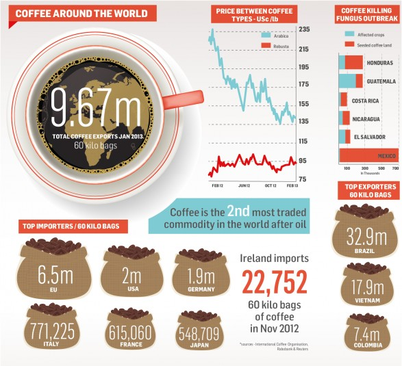

According to the global coffee exchange, coffee is the US's largest food import and second most valuable commodity only after oil. According to the
International Coffee Organization, the US imported 2.72 billion pounds of coffee from September 2001 to September 2002.(Global coffee Exchange 2011)

Coffee around the world consumption. Figure above shows how much is the top purchases of coffee around the world
Health Benefits of Drinking Coffee
From a health perspective, coffe can play an excellent role in our health. These are some of the
top benefits of drinking coffee:
Two cups of coffee can cut post-workout muscle pain by up to 48%. (the Journal of Pain, March 2007)
A cup of brewed coffee represents a contribution of up to 1.8 grams of fiber of the recommended intake of 20-38 grams.
(Journal of Agricultural and Food Chemistry)
There is considerable evidence that caffeine may protect against Alzheimer’s disease. (European Journal of Neurology 2002)
researchers found that study participants who consumed 3 to 5 cups of coffee a day were less likely to show the beginning signs of heart disease. (BMJ Journals 2015)